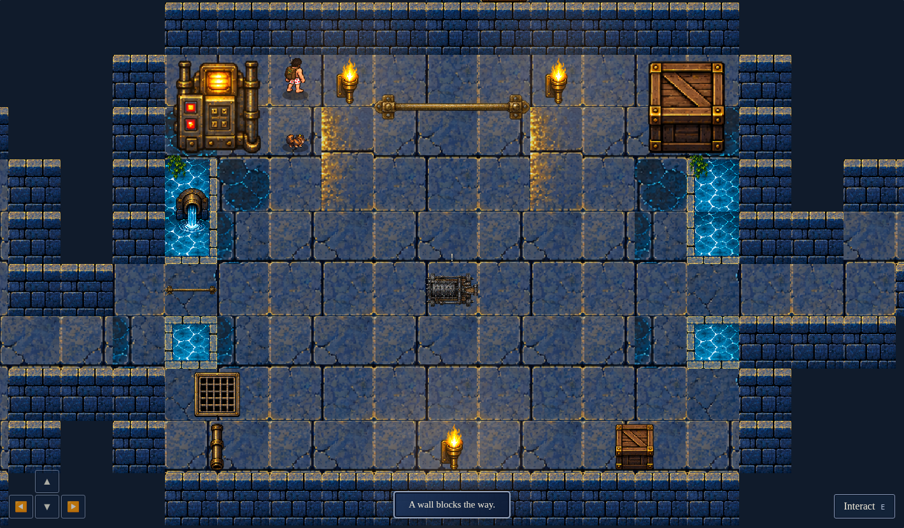
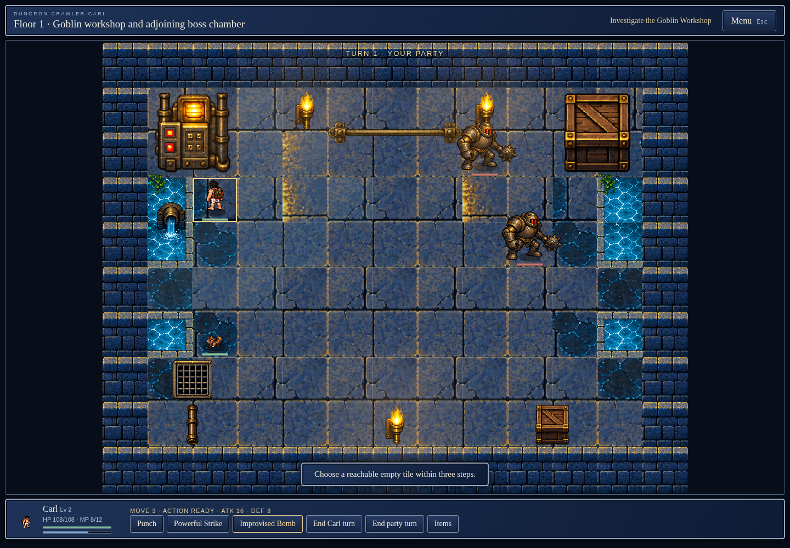
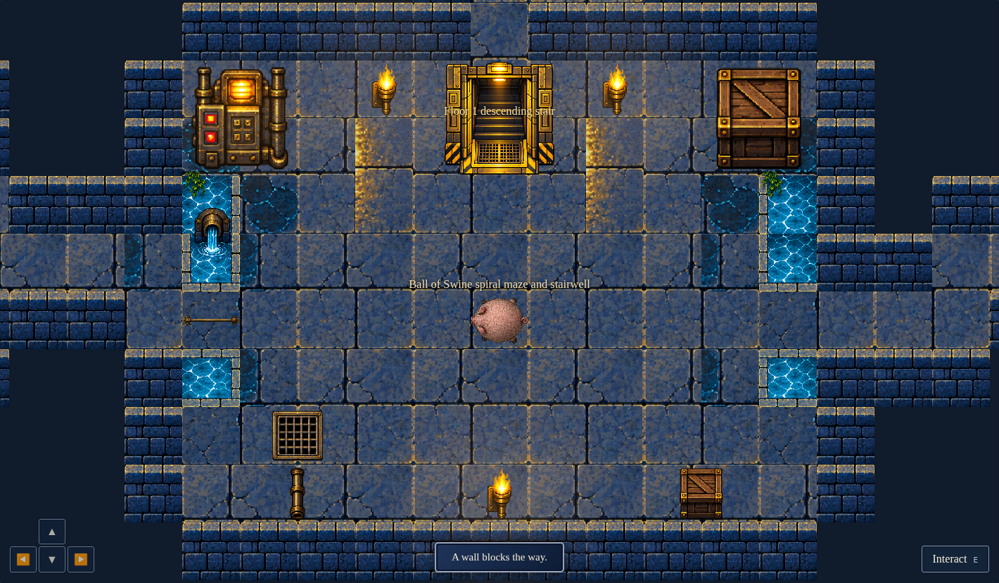
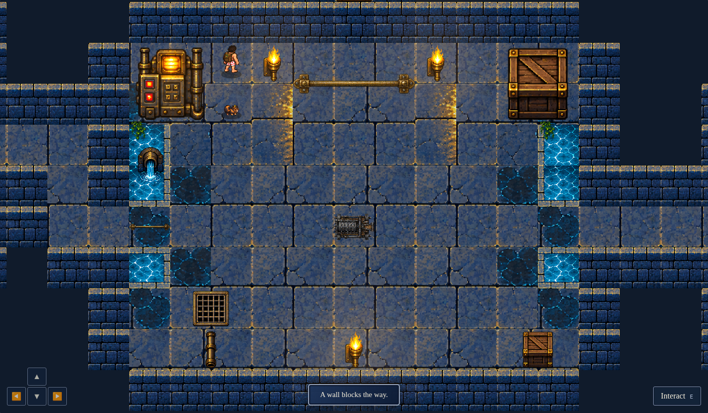

Actual published WebAssembly state and original renderer. Workshop and boss room screenshots use a camera-only browser response override to fit the generated room. No state, gameplay, geometry, assets, or draw calls are fabricated. Combat is entered by keyboard walking and E interaction.
The reference is a visual target. These comparisons document the current generated geometry, furniture and tactical battle; they do not assert a pixel identical reproduction. Full desktop and mobile captures and runtime JSON are included alongside this page.
Seed 1337: Generated boss arena · golden exit · camera fitted
REFERENCE · clean-map.pngACTUAL PUBLISHED WASM · Generated boss arena · golden exit · camera fitted
Seed 1337: Generated workshop arena · camera fitted
REFERENCE · clean-map.pngACTUAL PUBLISHED WASM · Generated workshop arena · camera fitted

Seed 1337: Combat · actual keyboard encounter
REFERENCE · clean-map.pngACTUAL PUBLISHED WASM · Combat · actual keyboard encounter

Seed 42: Generated boss arena · golden exit · camera fitted
REFERENCE · clean-map.pngACTUAL PUBLISHED WASM · Generated boss arena · golden exit · camera fitted

Seed 42: Generated workshop arena · camera fitted
REFERENCE · clean-map.pngACTUAL PUBLISHED WASM · Generated workshop arena · camera fitted

Seed 42: Combat · actual keyboard encounter
REFERENCE · clean-map.pngACTUAL PUBLISHED WASM · Combat · actual keyboard encounter